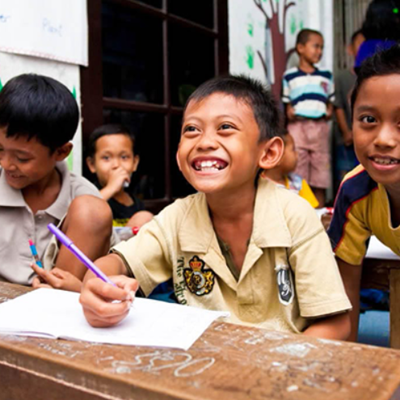
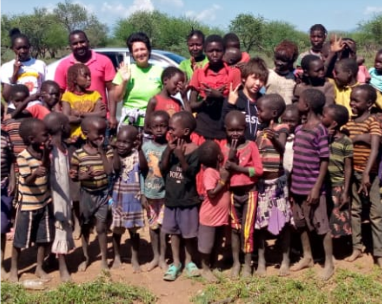
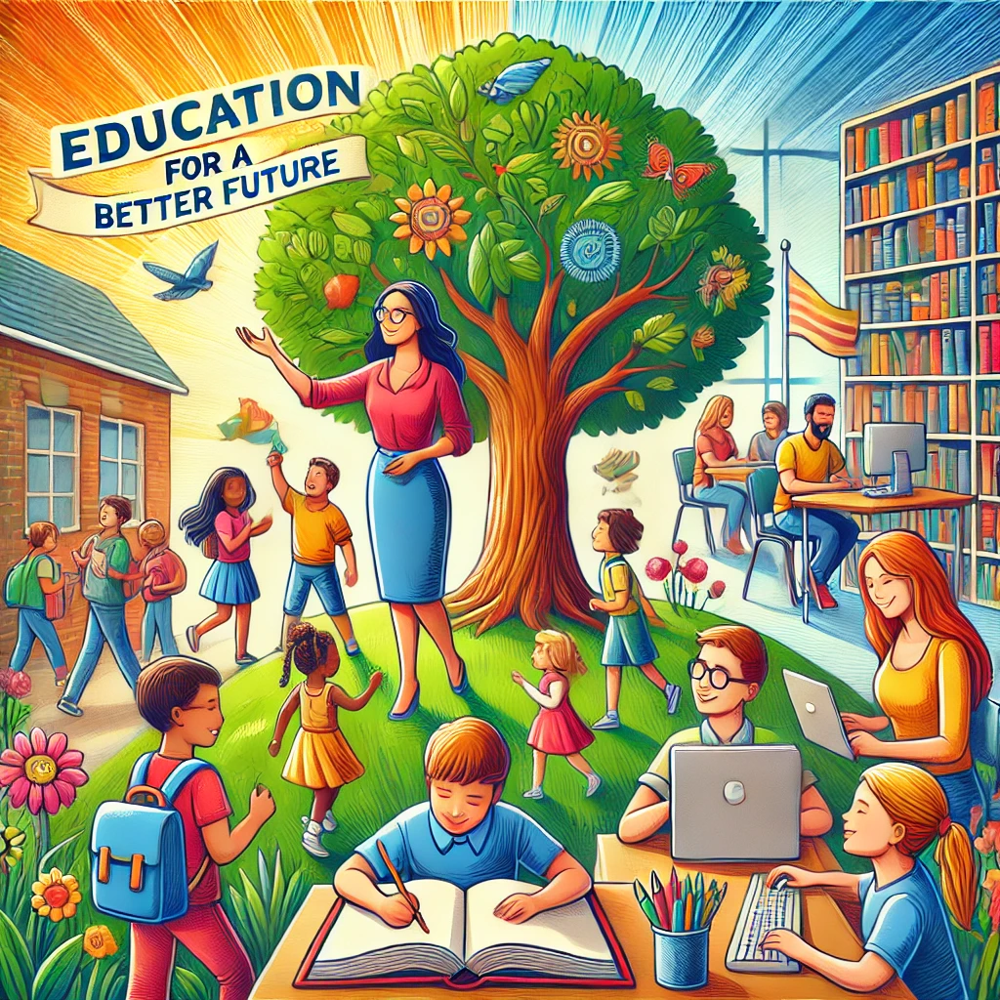

Humanity Haven

“The Humanity Haven is dedicated to two core missions: 1. Empowering Children: We focus on educating children in marginalized communities, providing them with the knowledge and skills to thrive. 2. Guiding Future Leaders: We also educate adults from diverse socio-economic backgrounds on how to establish and manage non-profit organizations, fostering leadership that champions positive change. Our philosophy is rooted in the belief that nurturing globally aware leaders contributes to a brighter future for our youth, amplifying the voices of those who often go unheard. At IHF, we embrace steady, meaningful growth, nurturing one individual at a time.“
“We believe those who have survived hunger and abuse, as well as many other challenges (mental and physical)-have a very special in-depth knowledge and compassion. When this is combined with leadership skills: All countries and local communities benefit as they ” Pass It On”. Our grown children, now wonderful adults, are living proof of this as they volunteer to help children as young as they once were in IHF. Our Adult Volunteers are also “students”, learning from their teams and experiences daily, passing on such lifelong lessons. One of the tools IHF has always used, is “People-person-stories”: Sharing honestly, yet safely, our painful lessons, realities, as our lives expertise, without shame- as well as sharing joy. We do this in small groups and teams as well as through podcasts and in person.
We believe education is a powerful tool for change. Our programs provide resources, mentorship, and scholarships to underprivileged children, helping them build a brighter future.
Access to healthcare is a basic human right. Our health camps and awareness drives focus on providing medical support and promoting healthy living habits in marginalized communities.